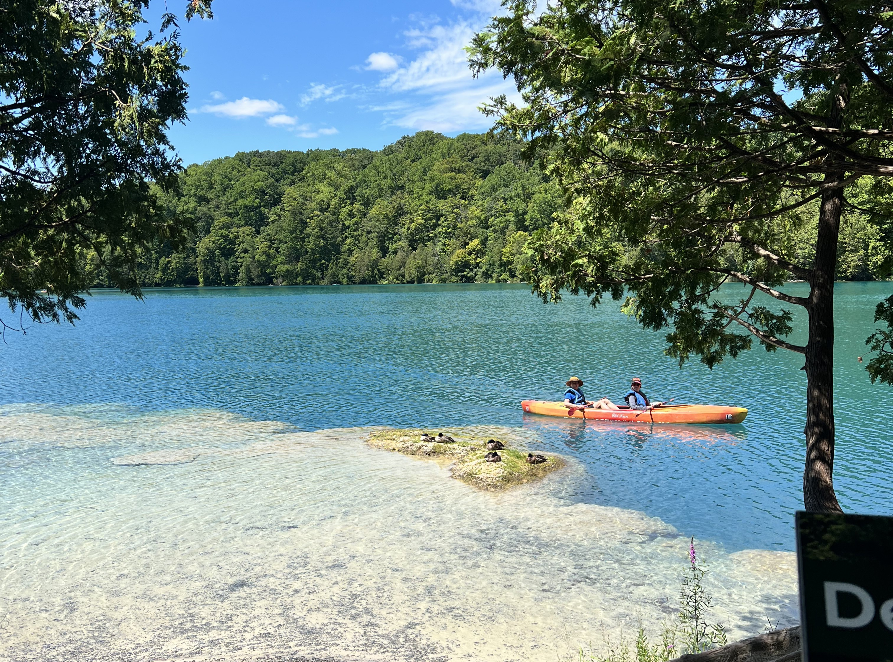

Green Lakes State Park

Activities
Green Lakes features 15-miles of trails through old growth forests that can be used for hiking, snowshoeing, and cross-country skiing! A 12-whole golf course sits on Green Lakes State Park – overlooking both Green and Round Lake. During warmer months, kayaks are available for rental on Green Lake. Lifeguarded beaches also open during the summer months, with swimming permitted in designated areas. The Education Center – located right on the edge of Green Lake – offers field trips, guided hikes, and more educational opportunities to people of all ages! Camping, Fishing, and Hunting are also popular activities at Green Lakes! See the official New York State Parks Website to get accurate, up-to-date information on current rules and regulationsWildlife
Green Lakes is home to a plethora of fish, most notably Rainbow Trout, Largemouth Bass, Bluegill, and Rock Bass. The Department of Environmental Conservation stocks fish in Green Lakes every spring to increase recreational fishing and restore native species to waters they formerly occupied. Some other animals to watch for at Green Lakes include Canada Geese, Ducks, Great Blue Herons, White-tailed Deer, Woodchucks, Racoons, Red and Gray Foxes, Coyotes, and Minks! Over 170 species of birds have been spotted at Green Lakes! Use this checklist to mark all of the birds that you spot!Conservation Efforts
Green Lakes Bird Conservation Area is a vital sanctuary where diverse bird species—from threatened Northern Harriers to forest breeders like Ovenbirds—find refuge in its unique mix of grasslands, mature forests, and meromictic lakes. Facing threats from invasive plants, woody encroachment, and deer overpopulation, New York State Parks has launched a targeted conservation plan to preserve these habitats by clearing invasive shrubs, mowing grasslands regularly, managing predators, and controlling deer populations—ensuring this critical bird haven continues to thrive for generations to come.Green Lakes State Park in Syracuse is renowned for its stunning glacial lakes—Green Lake and Round Lake—nestled within upland forest. These two lakes are meromictic, meaning their deep waters don’t mix with surface waters during fall and spring. This unique condition creates oxygen-free zones in the depths, preserving layers of sediment that offer valuable records of ancient plant and animal life, making the lakes some of the most studied of their kind in the world. Formed during the Ice Age, the lakes are believed to be remnants of giant plunge pools carved by massive waterfalls. Nearly half of the water feeding the lakes flows through surrounding bedrock rich in sulfur, calcium, and magnesium. This causes annual “whiting” events—mineral crystallites forming in the water—that give Green Lake its vibrant, striking color.